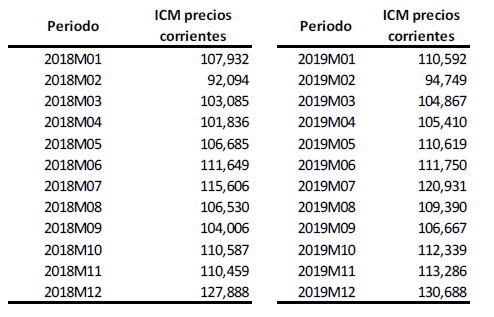
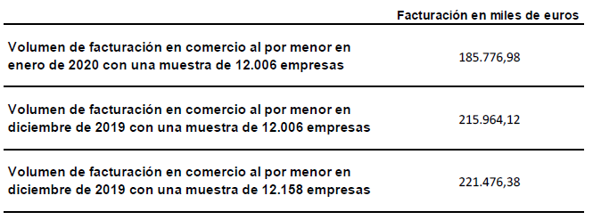
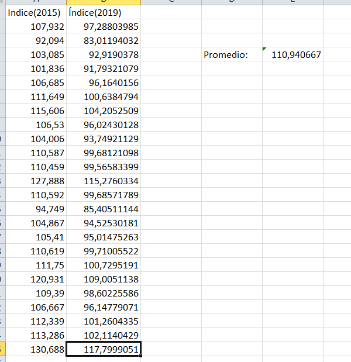

12. Introducción. Ejercicios de Estadística#
En este apartado se van a mostrar un serie de ejercicios de la parte de estadística
12.1. Ejercicio 1.#
El índice al Comercio al por Menor (ICM) es un índice tipo Laspeyres encadenado a diciembre. La serie en base 2015 para los años 2018 y 2019 es la siguiente (Oposiones DEE año 2023):

La muestra utilizada para el cálculo del índice en el año 2020 fue de 12.006 empresas. Conocemos los siguientes datos adicionales:

1) Calcular el índice de Comercio al por Menor (ICM) en base 2015 para el periodo de enero de 2020. Justifica su elaboración. Justifica cómo lo has elaborado.
2) ¿Cómo calcularías el coeficiente de enlace para pasar esta serie a base 2019? ¿Qué condición tiene que cumplir el año base?
3) Sabiendo que el IPC en base 2015 asociado a los productos que recoge el ICM tiene como valor índice 103,813 en diciembre de 2019, calcula el índice deflactado. ¿Qué conseguimos con la deflación del índice a precios corrientes?
4) Calcule la tasa de variación mensual del índice de precios corrientes de diciembre de 2019 y explique su significado.
Click aquí para ver la solución!
Solución.
1) Llamemos X al volumen de facturación al inicio del periodo, es decir en el año 2015 que es la base de la serie de número índices. Como en diciembre de 2015 el índice vale 130.688, eso quiere decir que X se ha incrementado en un 30.688 por ciento, y eso teniendo en cuenta 12158 empresas. Por lo tanto se tiene lo siguiente:
Es decir si aplicamos el tanto por ciento de incremento a la base debemos obtener el volumen de facturación en diciembre de 2019 para 12158 empresas.
Ahora bien la cantidad de 169469.56 se refiere a 12158 empresas, y sabemos que en diciembre de 2019 ese valor es de 215964.12 por lo que haciendo un reparto directamente proporcional la cantidad en la base para 12006 empresas sería:
Esta cantidad hace referencia al momento base. Como en enero de 2020 y para esas 12006 empresas el volumen de facturación es 185776.98, tendremos que el incremento sería
Es decir el incremento sería del 12.4 por ciento y por lo tanto el valor del índice pedido sería 112.4.
OTRA FORMA DE DAR UNA SOLUCIÓN PUEDE SER LA SIGUIENTE. Utilizamos la metodología de la encuesta que se puede encontrar en https://www.ine.es/daco/daco43/notaccm15.pdf, según la cual se puede ver que durante el mes de diciembre hay dos muestras para poder hacer el enlace entre las base de un año t-1 y el siguiente t. Para hacer este enlace, se construyen los índices no publicables (en base a diciembre del año t-1), estos índices de construyen de la siguiente manera:
donde \(\hat{F}_{CA,MD}^{mt}\) y \(\hat{F}_{CA,MD}^{dic(t-1)}\) hacen referencia a las facturaciones (o cifra de negocios) estimadas de un mes m del año t y de diciembre del año t-1, respectivamente y se han calculado con el mismo conjunto de empresas (tras haber realizado la rotación).
Se debe tener en cuenta que al realizar la rotación de unidades en enero, implica tener dos conjuntos de empresas en los meses de diciembre, uno referido a la muestra de empresas que han estado contestando durante todo el año t-1 y otro que se utilizará como mes de referencia para el cálculo de los índices del año t.
Ahora procederíamos a obtener el índice publicable (\(IP^{m})\). Lo haremos de la siguiente manera:
La cifra anterior es un cantidad referida al año base, 2015. Entonces para convertirlo en un índice con base 2015 hay que dividir la cifra anterior por el valor de 169469.56 que es la cifra de negocio en la base. Hacemos pues esa operación :
Resultado idéntico al obtenido anteriormente.
2) Para cambiar la base de un índice, normalmente lo que se hace es dividir el índice referenciado a otra base entre el valor del índice en la otra base pero referenciado al momento donde se define la base del índice. En este caso calcularíamos la media de todos los índices del año 2019, y para hacer el cambio de base a la nueva, dividimos todos los índices anteriores por esta media. Los resultados obtenidos en una hoja excel son los siguientes:

El año base de un índice indica el periodo respecto al cual se efectúan las comparaciones de las diferentes situaciones, lo que hace que generalmente, se suela elegir como tal uno no excesivamente alejado del periodo corriente, dado que las comparaciones pierden sentido al distanciarse los periodos de comparación. Por ello es conveniente renovar periódicamente la información relativa al año base, es decir, cambiar el año base, para que el índice no quede obsoleto y pierda significatividad.
En el caso del índice de comercio al por menor se debe de cambiar de base cada cinco años, en los años terminados en 0 y 5.
Dado que los datos del año base serán utilizados como ponderadores de la serie de índices, se requiere que deba contemplarse un año normal y para ello deben tenerse en cuenta determinados requisitos o condiciones, siendo los más importantes:
a) que sea un año reciente: es decir que se cumpla el objetivo importante de que los precios a utilizar en la base como estructuras de ponderaciones representen en buena medida a los bienes transados actualmente en la economía.
b) que se verifique un elevado nivel de crecimiento: esto supone que ese año presente una tendencia ascendente de la actividad económica, dejando de lado años con tasas de evolución negativas o bajos niveles de actividad.
c) que exista normalidad en las condiciones de mercado: se tiene que evitar que en el período a elegir se hayan producido hechos desequilibrantes como pérdidas de cosechas, desastres de la naturaleza, recesión, huelgas, control de precios, etc.
d) que exista cierta uniformidad en las variaciones de precios: para evitar cambios significativos en la estructura de valuación.
e) que sea razonable la disponibilidad de información.
3) Para deflactar una serie monetaria nominal hay que trabajar con el índice de precios (conocido como deflactor) adecuado. Normalmente, el IPC el se utiliza a tal efecto de forma generalizada aunque tiene un inconveniente, y es que el IPC es un índice tipo Laspeyres y con este tipo de índices no se consigue una deflactación real, cosa que sí ocurre con los índices de tipo Paasche. No obstante todo lo anterior, lo que se suele utilizar es el IPC a efectos de deflacionar una serie monetaria como es el índice de comercio al por menor. Al deflactar una serie lo que se consigue es eliminar el efecto de inflación o subida en exclusiva de los precios.
En este caso el índice deflactado sería igual a los siguiente:
Es decir pasamos de un incremento de 30,688 por ciento en términos de precios actuales a un incremento de 25.89% en términos reales (es decir, sin tener en cuenta la inflación)
deflactando lo que conseguimos es eliminar el factor precios y quedarnos sólo con el efecto de cantidad, puesto que:
Si despejamos el deflactor:
En el caso del deflactor del ICM obtendríamos las cantidades vendidas del comercio al por menor.
4) Se define la tasa de variación mensual en este caso, como el cociente entre el incremento del valor del bien entre t1 y t2 en relación con su valor en el instante t1, es decir:
aplicando lo anterior a este caso concreto, la tasa de variación mensual sería la siguiente:
El valor que obtenemos de esta manera nos indica que el volumen de facturación en comercio al por menor en el mes de diciembre de 2019 se incrementó en 15.34 por ciento en términos corrientes respecto al mes de noviembre de ese mismo año.
12.2. Ejercicio 2.#
A un puesto aduanero llegan periódicamente misiones diplomáticas procedentes de determinado país constituidas por 10 miembros. El citado país es un gran productor de marihuana, circunstancia que de vez en cuando es aprovechada por sus miembros por sus misiones diplomáticas para introducir algún que otro cargamento en el país que visitan siendo la forma de hacerlo el que dos de los diez miembros lleven en sus maletas la hierba. Los aduaneros están ya informados del truco, pero para no producir incidentes diplomáticos se limitan a inspeccionar dos de las diez maletas dejando pasar a la misión si en las maletas inspeccionadas no encuentran droga . Su experiencia les dice además que el 10% de las misiones portan droga. Si una misión inspeccionada no arroja resultados positivos ¿cual es la probabilidad de que realmente dicha misión no lleve droga alguna?
Click aquí para ver la solución!
Solución.
Vamos a definir los siguientes sucesos:
\(A_1\) La delegación porta droga
\(A_2\) la delegación no lleva droga
\(B\) Una misión inspeccionada arroja resultado negativo
Entonces de acuerdo al enunciado se tiene:
Calculemos la \(P(B|A_1)\) para ello utilizamos la distribución hipergeométrica
Por otro lado se tiene que \(P(B|A_2)=1\)
El problema lo que nos pide es \(P(A_2|B)\). Esta probabilidad podemos calcularla con ayuda del teorema de Bayes. POr lo tanto.
12.3. Ejercicio 3#
Un ciudadano tiene la mala costumbre de emborracharse la mitad de los días. Para abrir su casa tiene un llavero en el que hay cinco llaves muy parecidas, una de las cuales es la que permite entrar. Incluso los días que está sereno, nuestro amigo, que es muy distraído y no reconoce cual de las llaves es la que abre la casa, tiene que probar una a una las llaves hasta dar con la adecuada. Los días que está borracho prueba llave tras llave pero al ser incapaz de discernir si una llave ya ha sido probada o no, entrar en casa puede costarle un número más o menos elevado de pruebas. Si observándole un día a distancia vemos que el hombre logró entrar en su casa a la tercera tentativa ¿qué probabilidad asignaremos a la posibilidad de que ese día estuviera borracho?.
Click aquí para ver la solución!
Solución. Vamos a designar los siguiente sucesos:
\(M_1\) : El hombre no está borracho
\(M_2\) : El hombre está borracho
\(B_i\) encontro la lleve correcta a la i-ésima tentativa
POr lo tanto lo que nos pide el problema es calcular \(P(M_2|B_3)\)
Por los datos del problema sabemos que:
Y además
Pues 5! son las posibles ordenaciones de las cinco llaves y 4! son aquellas oedenaciones en la que la llave correcta está en tercer lugar.6
Igualmente y aplicando la distribución geométrica o distribución de pascal, de obtener el primer éxito en el tercer intento de abrir la cerradura, se obtendría:
En consecuencia y aplicando el teorema de Bayes se obtiene
Además, en el supuesto de que acertara a la primera, se tiene:
para \(1<n\le5\Rightarrow P(M_{2}|B_{n})>p(M_{1}|B_{n})\)
y para \(n>5\Rightarrow p(M_{2}|B_{n})=0<P(M_{1}|B_{n})=1\)